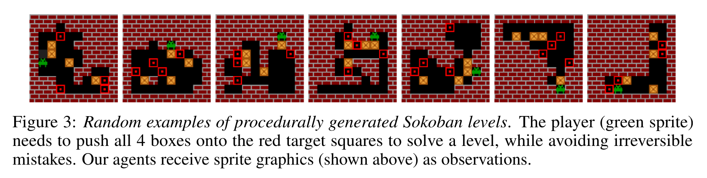
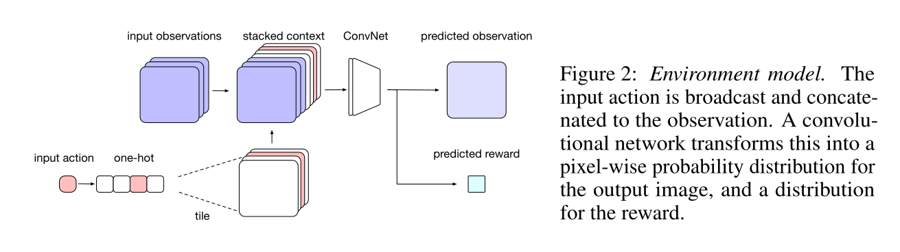
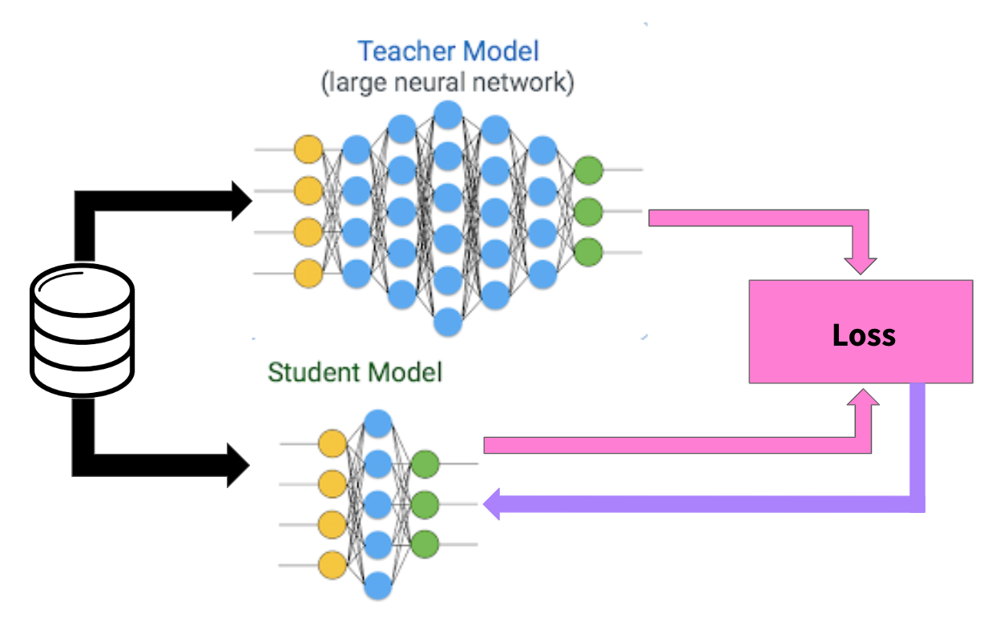
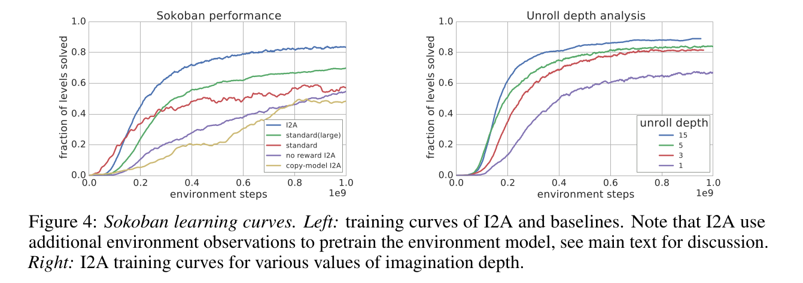
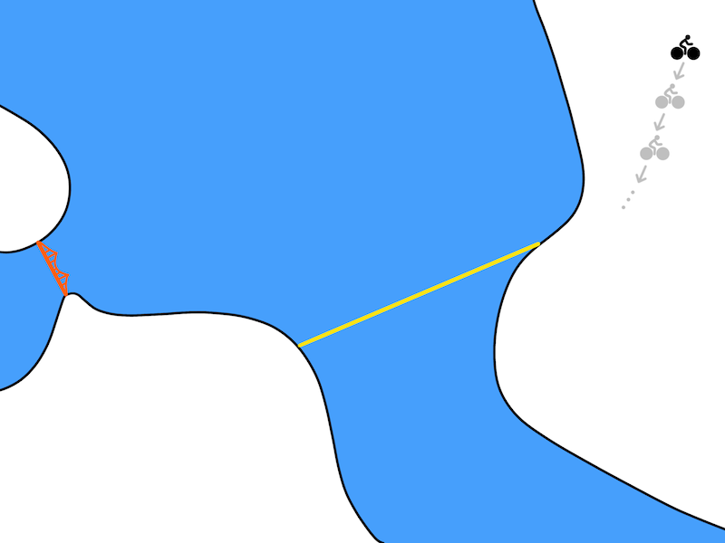
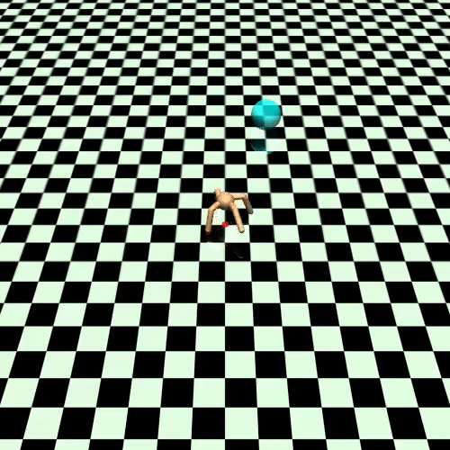
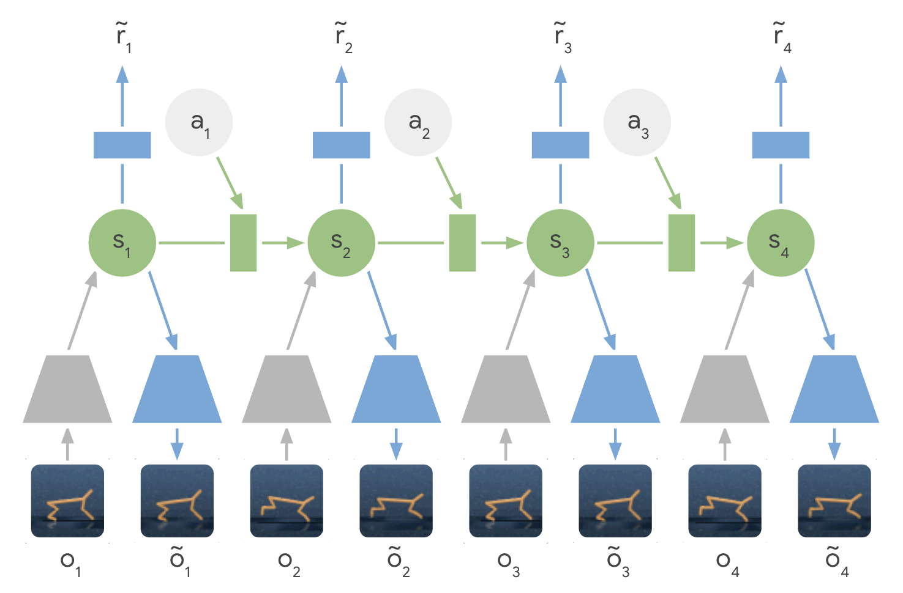
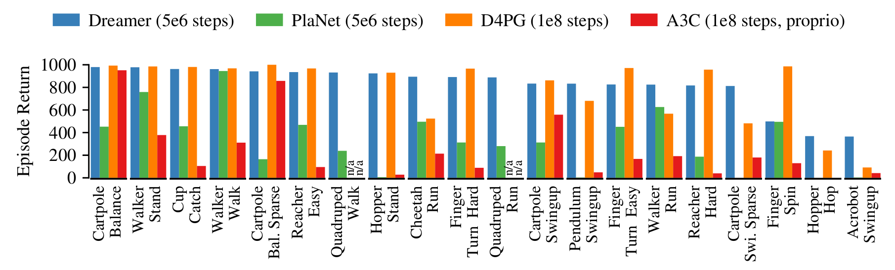
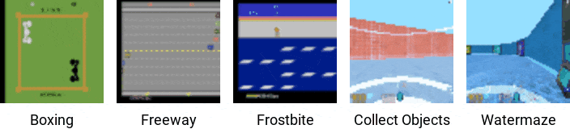

Learned world models
There are two families of model-based algorithms using a learned transition model:
- Model-based augmented model-free (MBMF) are inspired from Dyna-Q: the model generates imaginary transitions/rollouts that are used to train a model-free algorithm.
- NAF: Normalized advantage functions (Gu et al., 2016)
- I2A: Imagination-augmented agents (Weber et al., 2017)
- MBVE: model-based value estimation (Feinberg et al., 2018)
- Model-based planning methods are inspired from MPC: the learned model is used to plan actions that maximize the RL objective.
- TDM: Temporal difference models (Pong et al., 2018)
- World models (Ha and Schmidhuber, 2018)
- PlaNet (Hafner et al., 2019)
- Dreamer (Hafner et al., 2020)
I2A - Imagination-augmented agents
I2A (Weber et al., 2017) is a model-based augmented model-free method: it trains a MF algorithm (A3C) with the help of rollouts generated by a MB model.

They showcase their algorithm on the puzzle environment Sokoban, where you need to move boxes to specified locations. Sokoban is a quite hard game, as actions are irreversible (you can get stuck) and the solution requires many actions (sparse rewards). MF methods are bad at this game as they learn through trials-and-(many)-errors.
The model learns to predict the next frame and the next reward based on the four last frames and the chosen action.

It is a convolutional autoencoder, taking additionally an action a as input and predicting the next reward. It can be pretrained using a random policy, and later fine-tuned during training.

The imagination core is composed of the environment model M(s, a) and a rollout policy \hat{\pi}. As Sokoban is a POMDP (partially observable), the notation uses observation o_t instead of states s_t, but it does not really matter here. The rollout policy \hat{\pi} is a simple and fast policy. It does not have to be the trained policy \pi. It could even be a random policy, or a pretrained policy using for example A3C directly. In I2A, it is a distilled policy from the trained policy \pi (see later). Take home message: given the current observation o_t and a policy \hat{\pi}, we can predict the next observation \hat{o}_{t+1} and the next reward \hat{r}_{t+1}.
The imagination rollout module uses the imagination core to predict iteratively the next \tau frames and rewards using the current frame o_t and the rollout policy:
o_t \rightarrow \hat{o}_{t+1} \rightarrow \hat{o}_{t+2} \rightarrow \ldots \rightarrow \hat{o}_{t+\tau}
The \tau frames and rewards are passed backwards to a convolutional LSTM (from t+\tau to t) which produces an embedding / encoding of the rollout. The output of the imagination rollout module is a vector e_i (the final state of the LSTM) representing the whole rollout, including the (virtually) obtained rewards. Note that because of the stochasticity of the rollout policy \hat{\pi}, different rollouts can lead to different encoding vectors.
For the current observation o_t, we then generate one rollout per possible action (5 in Sokoban):
- What would happen if I do action 1?
- What would happen if I do action 2?
- etc.
The resulting vectors are concatenated to the output of model-free path (a convolutional neural network taking the current observation as input). Altogether, we have a huge NN with weights \theta (model, encoder, MF path) producing an input s_t to the A3C module.
We can then learn the policy \pi and value function V based on this input to maximize the returns:
\nabla_\theta \mathcal{J}(\theta) = \mathbb{E}_{s_t \sim \rho_\theta, a_t \sim \pi_\theta}[\nabla_\theta \log \pi_\theta (s_t, a_t) \, (\sum_{k=0}^{n-1} \gamma^{k} \, r_{t+k+1} + \gamma^n \, V_\varphi(s_{t+n}) - V_\varphi(s_t)) ]
\mathcal{L}(\varphi) = \mathbb{E}_{s_t \sim \rho_\theta, a_t \sim \pi_\theta}[(\sum_{k=0}^{n-1} \gamma^{k} \, r_{t+k+1} + \gamma^n \, V_\varphi(s_{t+n}) - V_\varphi(s_t))^2]
The complete architecture may seem complex, but everything is differentiable so we can apply backpropagation and train the network end-to-end using multiple workers. It is the A3C algorithm (MF), but augmented by MB rollouts, i.e. with explicit information about the future.
The rollout policy \hat{\pi} is trained using policy distillation of the trained policy \pi (Rusu et al., 2016). The small rollout policy network with weights \hat{\theta} tries to copy the outputs \pi(s, a) of the bigger policy network (A3C). This is a supervised learning task: just minimize the KL divergence between the two policies:
\mathcal{L}(\hat{\theta}) = \mathbb{E}_{s, a} [D_\text{KL}(\hat{\pi}(s, a) || \pi(s, a))]
As the network is smaller, it won’t be as good as \pi, but its learning objective is easier.

Distillation can be used to ensure generalization over different environments (Teh et al., 2017). Each learning algorithms learns its own task, but tries not to diverge too much from a shared policy, which turns out to be good at all tasks.

Unsurprisingly, I2A performs better than A3C on Sokoban. The deeper the rollout, the better.

The model does not even have to be perfect: the MF path can compensate for imperfections.

Temporal difference models - TDM
One problem with model-based planning is the discretization time step (difference between t and t+1). It is determined by the action rate: how often a different action a_t has to be taken. In robotics, it could be below the millisecond, leading to very long trajectories in terms of steps.

If you want to go from Berkeley to the Golden State bridge with your bike, planning over leg movements will be very expensive (long horizon). A solution is multiple steps ahead planning. Instead of learning a one-step model:
s_{t+1} = f_\theta(s_t, a_t)
one learns to predict the state achieved in T steps using the current policy:
s_{t+ T} = f_\theta(s_t, a_t, \pi)
Planning and acting occur at different time scales.
A problem with RL in general is how to define the reward function. If you goal is to travel from Berkeley to the Golden State bridge, which reward function should you use? * +1 at the bridge, 0 otherwise (sparse). * +100 at the bridge, -1 otherwise (sparse). * minus the distance to the bridge (dense).
Goal-conditioned RL defines the reward function using the distance between the achieved state s_{t+1} and a goal state s_g:
r(s_t, a_t, s_{t+1}) = - || s_{t+1} - s_g ||
An action is good if it brings the agent closer to its goal. The Euclidean distance works well for the biking example (e.g. using a GPS), but the metric can be adapted to the task.
One advantage is that you can learn multiple “tasks” at the same time with a single policy, not the only one hard-coded in the reward function. Another advantage is that it makes a better use of exploration by learning from mistakes: hindsight experience replay (HER, (Andrychowicz et al., 2017)).
If your goal is to reach s_g but the agent generates a trajectory landing in s_{g'}, you can learn that this trajectory is good way to reach s_{g'}! In football, if you try to score a goal but end up doing a pass to a teammate, you can learn that this was a bad shot and a good pass. HER is a model-based method: you implicitly learn a model of the environment by knowing how to reach any position.

Exploration never fails: you always learn to do something, even if this was not your original goal. The principle of HER can be used in all model-free methods: DQN, DDPG, etc.
Using the goal-conditioned reward function r(s_t, a_t, s_{t+1}) = - || s_{t+1} - s_g ||, how can we learn? TDM introduces goal-conditioned Q-value with a horizon T: Q(s, a, s_g, T). The Q-value of an action should denote how close we will be from the goal s_g in T steps. If we can estimate these Q-values, we can use a planning algorithm such as MPC to find the action that will bring us closer to the goal easily:
a^* = \text{arg}\max_{a_t} \, r(s_{t+T}, a_{t+T}, s_{t+T + 1})
This corresponds to planning T steps ahead; which action should I do now in order to be close to the goal in T steps?


If the horizon T is well chosen, we only need to plan over a small number of intermediary positions, not over each possible action. TDM is model-free on each subgoal, but model-based on the whole trajectory.
How can we learn the goal-conditioned Q-values Q(s, a, s_g, T) with a model? TDM introduces a recursive relationship for the Q-values:
\begin{aligned} Q(s, a, s_g, T) &= \begin{cases} \mathbb{E}_{s'} [r(s, a, s')] \; \text{if} \; T=0\\ &\\ \mathbb{E}_{s'} [\max_a \, Q(s', a, s_g, T-1)] \; \text{otherwise.}\\ \end{cases} \\ &\\ &= \mathbb{E}_{s'} [r(s, a, s') \, \mathbb{1}(T=0) + \max_a \, Q(s', a, s_g, T-1) \, \mathbb{1}(T\neq 0)]\\ \end{aligned}
If we plan over T=0 steps, i.e. immediately after the action (s, a), the Q-value is the remaining distance to the goal from the next state s'. Otherwise, it is the Q-value of the greedy action in the next state s' with an horizon T-1 (one step shorter). This allows to learn the Q-values from single transitions (s_t, a_t, s_{t+1}): * with T=0, the target is the remaining distance to the goal. * with T>0, the target is the Q-value of the next action at a shorter horizon.
The critic learns to minimize the prediction error off-policy:
\mathcal{L}(\theta) = \mathbb{E}_{s_t, a_t, s_{t+1} \in \mathcal{D}} [(r(s_t, a_t, s_{t+1}) \, \mathbb{1}(T=0) + \max_a \, Q(s_{t+1}, a, s_g, T-1) \, \mathbb{1}(T\neq 0) - Q(s_t, a_t, s_g, T))^2]
This is a model-free Q-learning-like update rule, that can be learned by any off-policy value-based algorithm (DQN, DDPG) and an experience replay memory. The cool trick is that, with a single transition (s_t, a_t, s_{t+1}), you can train the critic with: * different horizons T, e.g. between 0 and T_\text{max}. * different goals s_g. You can sample any achievable state as a goal, including the “true” s_{t+T} (hindsight).
You do not only learn to reach s_g, but any state! TDM learns a lot of information from a single transition, so it has a very good sample complexity.
TDM learns to break long trajectories into finite horizons (model-based planning) by learning model-free (Q-learning updates). The critic learns how good an action (s, a) is order to reach a state s_g in T steps.
Q(s, a, s_g, T) = \mathbb{E}_{s'} [r(s, a, s') \, \mathbb{1}(T=0) + \max_a \, Q(s', a, s_g, T-1) \, \mathbb{1}(T\neq 0)]
The actor uses MPC planning to iteratively select actions that bring us closer to the goal in T steps:
a_t = \text{arg}\max_{a} \, Q(s_{t}, a, s_{g}, T)
The argmax can be estimated via sampling. TDM is a model-based method in disguise: it does predict the next state directly, but how much closer it will be to the goal via Q-learning.
For problems where the model is easy to learn, the performance of TDM is on par with model-based methods (MPC).

Model-free methods have a much higher sample complexity. TDM learns much more from single transitions.

For problems where the model is complex to learn, the performance of TDM is on par with model-free methods (DDPG).

Model-based methods suffer from model imprecision on long horizons. TDM plans over shorter horizons T.

World models
The core idea of world models (Ha and Schmidhuber, 2018) is to explicitly separate the world model (what will happen next) from the controller (how to act). Deep RL NN are usually small, as rewards do not contain enough information to train huge networks.

A huge world model can be efficiently trained by supervised or unsupervised methods. A small controller should not need too many trials if its input representations are good.
The vision module V is trained as a variational autoencoder (VAE) on single frames of the game. The latent vector \mathbf{z}_t contains a compressed representation of the frame \mathbf{o}_t.
The sequence of latent representations \mathbf{z}_0, \ldots \mathbf{z}_t in a game is fed to a LSTM layer together with the actions a_t to compress what happens over time. A Mixture Density Network (MDN) is used to predict the distribution of the next latent representations P(\mathbf{z}_{t+1} | a_t, \mathbf{h}_t, \ldots \mathbf{z}_t).
The RNN-MDN architecture (Ha and Eck, 2017) has been used successfully in the past for sequence generation problems such as generating handwriting and sketches (Sketch-RNN, see https://magenta.tensorflow.org/sketch-rnn-demo for demos).

The last step is the controller. It takes a latent representation \mathbf{z}_t and the current hidden state of the LSTM \mathbf{h}_t as inputs and selects an action linearly:
a_t = \text{tanh}(W \, [\mathbf{z}_t, \mathbf{h}_t ] + b)
A RL actor cannot get simpler as that…

The controller is not even trained with RL: it uses a genetic algorithm, the Covariance-Matrix Adaptation Evolution Strategy (CMA-ES), to find the output weights that maximize the returns. The world model is trained by classical supervised learning using a random agent before learning.
Refer https://worldmodels.github.io/ to see the model in action.
Algorithm:
Collect 10,000 rollouts from a random policy.
Train VAE (V) to encode each frame into a latent vector \mathbf{z} \in \mathcal{R}^{32}.
Train MDN-RNN (M) to model P(\mathbf{z}_{t+1} | a_t, \mathbf{h}_t, \ldots \mathbf{z}_t).
Evolve Controller (C) to maximize the expected cumulative reward of a rollout.
The world model V+M is learned offline with a random agent, using unsupervised learning. The controller C has few weights (1000) and can be trained by evolutionary algorithms, not even RL. The network can even learn by playing entirely in its own imagination as the world model can be applied on itself and predict all future frames. It just need to additionally predict the reward. The learned policy can then be transferred to the real environment.
Deep Planning Network - PlaNet
PlaNet (Hafner et al., 2019) extends the idea of World models by learning the model together with the policy (end-to-end). It learns a latent dynamics model that takes the past observations o_t into account (needed for POMDPs):
s_{t}, r_{t+1}, \hat{o}_t = f(o_t, a_t, s_{t-1})
and plans in the latent space using multiple rollouts:
a_t = \text{arg}\max_a \mathbb{E}[R(s_t, a, s_{t+1}, \ldots)]
The latent dynamics model is a sequential variational autoencoder learning concurrently:
- An encoder from the observation o_t to the latent space s_t: q(s_t | o_t).
- A decoder from the latent space to the reconstructed observation \hat{o}_t: p(\hat{o}_t | s_t).
- A transition model to predict the next latent representation given an action: p(s_{t+1} | s_t, a_t).
- A reward model predicting the immediate reward: p(r_t | s_t).

The loss function to train this recurrent state-space model (RSSM), with a deterministic component in the transition model (RNN) and stochastic components is not shown here.
Training sequences (o_1, a_1, o_2, \ldots, o_T) can be generated off-policy (e.g. from demonstrations) or on-policy.

From a single observation o_t encoded into s_t, 10000 rollouts are generated using random sampling. A belief over action sequences is updated using the cross-entropy method (CEM) in order to restrict the search. The first action of the sequence with the highest estimated return (reward model) is executed. At the next time step, planning starts from scratch: Model Predictive Control. There is no actor in PlaNet, only a transition model used for planning.

Planet learns continuous image-based control problems in 2000 episodes, where D4PG needs 50 times more.
The latent dynamics model can learn 6 control tasks at the same time. As there is no actor, but only a planner, the same network can control all agents!
Dreamer
Dreamer (Hafner et al., 2020) extends the idea of PlaNet by additionally training an actor instead of using a MPC planner. The latent dynamics model is the same RSSM architecture. Training a “model-free” actor on imaginary rollouts instead of MPC planning should reduce the computational time.

The behavior module learns to predict the value of a state V_\varphi(s) and the policy \pi_\theta(s) (actor-critic). It is trained in imagination in the latent space using the reward model for the immediate rewards (to compute returns) and the transition model for the next states.
The current observation o_t is encoded into a state s_t, the actor selects an action a_t, the transition model predicts s_{t+1}, the reward model predicts r_{t+1}, the critic predicts V_\varphi(s_t). At the end of the sequence, we apply backpropagation-through-time to train the actor and the critic.
The critic V_\varphi(s_t) is trained on the imaginary sequence (s_t, a_t, r_{t+1}, s_{t+1}, \ldots, s_T) to minimize the prediction error with the \lambda-return:
R^\lambda_t = (1 - \lambda) \, \sum_{n=1}^{T-t-1} \lambda^{n-1} \, R^n_t + \lambda^{T-t-1} \, R_t
The actor \pi_\theta(s_t, a_t) is trained on the sequence to maximize the sum of the value of the future states:
\mathcal{J}(\theta) = \mathbb{E}_{s_t, a_t \sim \pi_\theta} [\sum_{t'=t}^T V_\varphi(s_{t'})]
The main advantage of training an actor is that we need only one rollout when training it: backpropagation maximizes the expected returns. When acting, we just need to encode the history of the episode in the latent space, and the actor becomes model-free!

Dreamer beats model-free and model-based methods on 20 continuous control tasks.


It also learns Atari and Deepmind lab video games, sometimes on par with Rainbow or IMPALA!
